ActD Se connecter
UMLActivity
Untitled
::
Session
::
ActD Se connecter
Description
none
Diagrams

ActD Se connecter
Groups
Visiteur
SI
BDD
Edges
(InitialNode1→Se connecter)
(Se connecter→Afficher le formulaire de connection)
(Afficher le formulaire de connection→Remplir les informations)
(Remplir les informations→Demander la liste des comptes)
(Demander la liste des comptes→Envoyer la liste des comptes)
(Envoyer la liste des comptes→Comparer les information Form avec BDD)
(Comparer les information Form avec BDD→Afficher "Mauvais login ou MDP")
(Afficher "Mauvais login ou MDP"→Session START)
(Session START→Afficher le formulaire de prise de note)
(Afficher le formulaire de prise de note→ActivityFinalNode1)
(Comparer les information Form avec BDD→DecisionNode1)
NOK (DecisionNode1→Afficher "Mauvais login ou MDP")
OK (DecisionNode1→Session START)
(Afficher "Mauvais login ou MDP"→Afficher le formulaire de connection)
Properties
Name
Value
name
ActD Se connecter
stereotype
null
visibility
public
isReentrant
true
isReadOnly
false
isSingleExecution
false
Owned Elements
ActD Se connecter